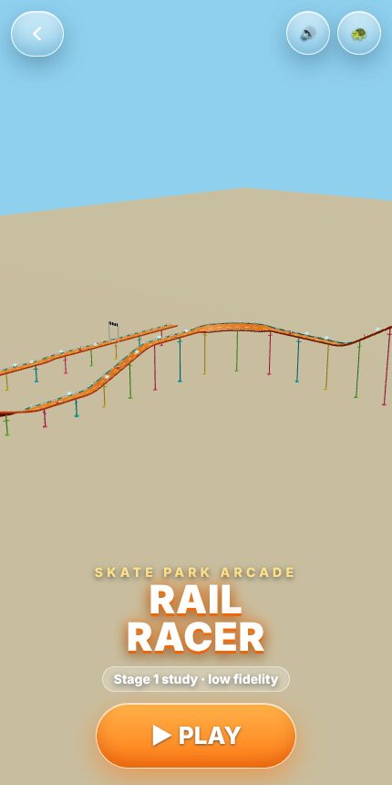
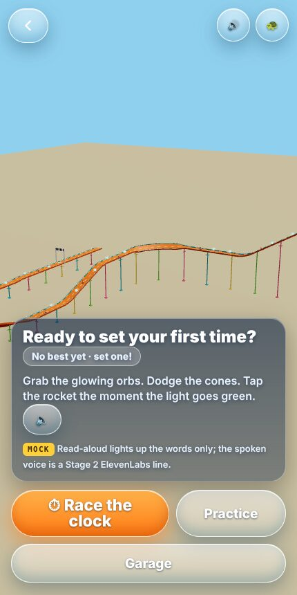
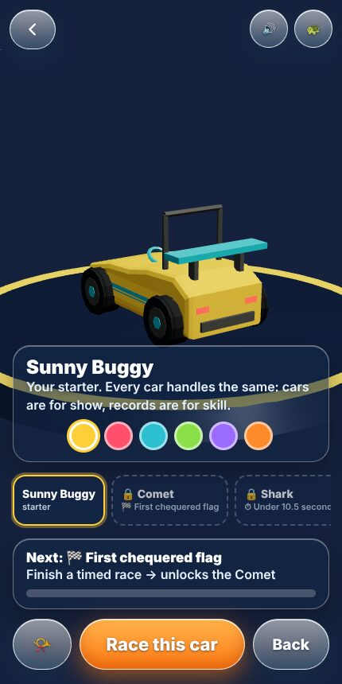
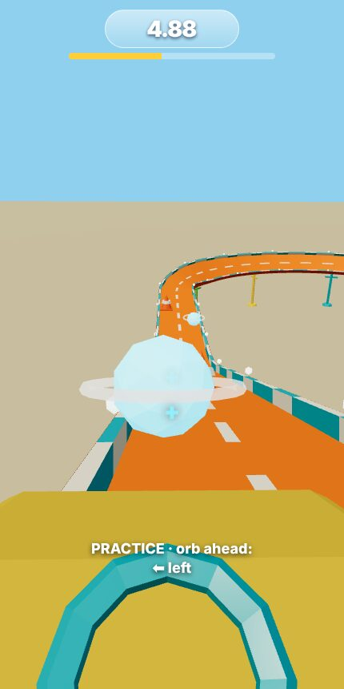
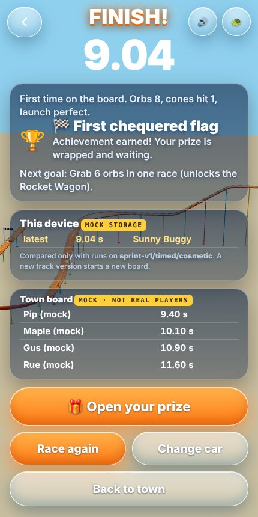
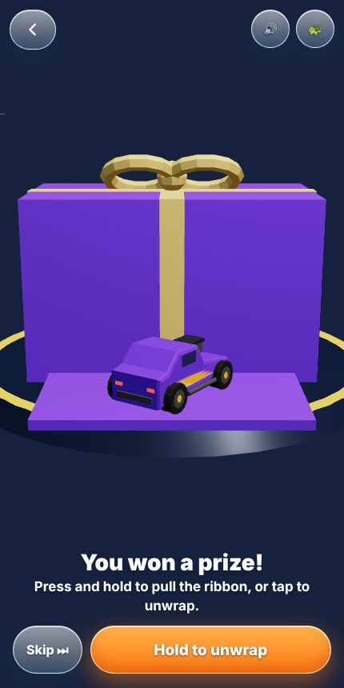
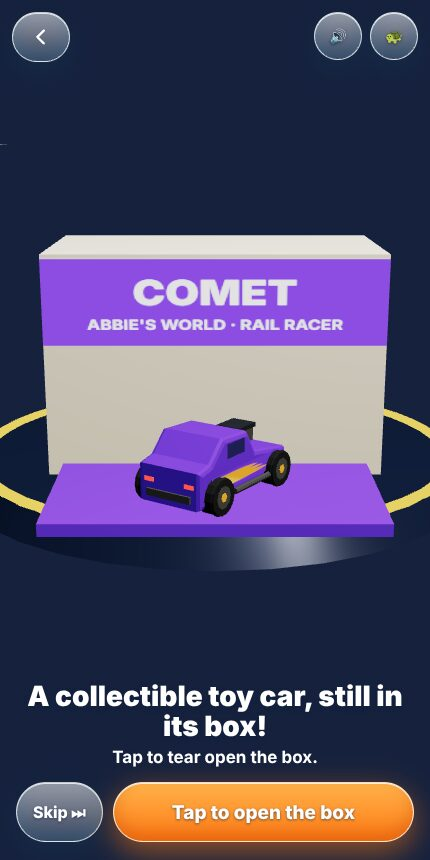
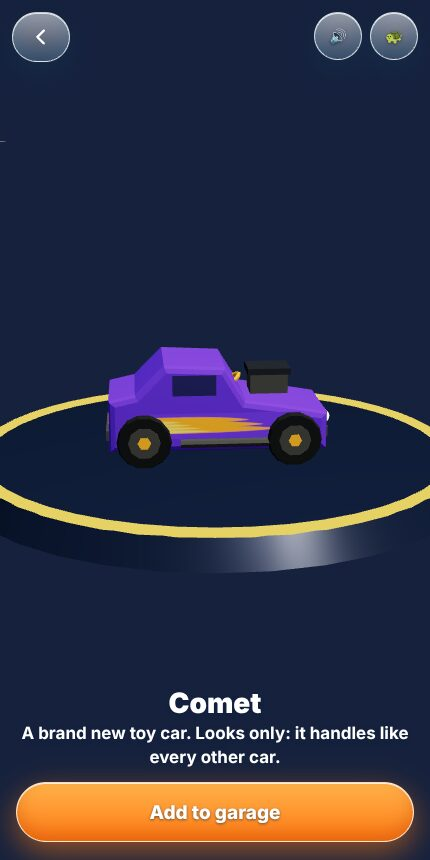
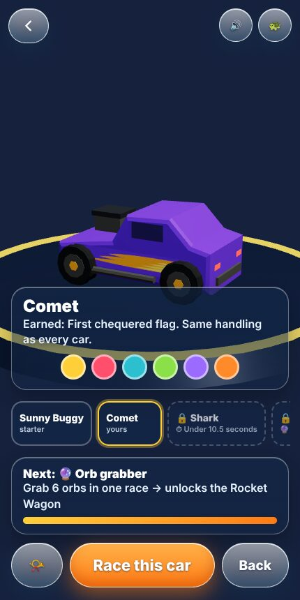

Evan, 2026-10-24: reimagine the toy-car coaster at Winchester's skate park as a complete arcade rail-racing game. Players pick a car, race, earn achievements (including race times), win a wrapped prize, unwrap it, unbox a new car, and later use it. This is the whole arcade loop, not a bare ride: it is built for a phone first.
Feedback first, then hi-fi, then game-ready. Nothing here is live in the town: it is experimental (arcade-racer in the game registry).
The whole loop, as played

1. Attract. The track turns slowly behind the sign. One big button.

2. The question. "Ready to beat your best?" One sentence of rules, a read-aloud button (mock), Practice or race.

3. Garage. Owned versus earnable, a turntable you can drag, paint, honk, and the next achievement with its bar.

4. Race. Tap left or right to change lane. Orbs speed you up, cones slow you. Practice adds a hint line.

5. Results. Time, best, improvement, achievement, next goal. Local board is real; the town board is a labelled mock.

6. Wrapped prize. Hold to pull the ribbon, or tap.

7. The box. A collectible toy in its packaging. Tap to tear it open.

8. Hero reveal. Flash, lift, turntable. "Add to garage".

9. Next run. Reloaded: the Comet is still in the garage and is the car you race.
What is playable, and what is a mock
Part
Status
Rail race with lane choice, orbs, cones and launch timing, on a real clock
Playable. A short run (about 9 to 13 s). Not tuned by human play: it does not validate racing feel.
Practice, garage, paint, results, retry, back to town
Playable
Prize: wrap, ribbon pull, box, tear, hero, add to garage, try it now
Playable, primitives only
Saving cars and times
MOCK this device only (localStorage); production plan in the study doc
Town board
MOCK fixed rows, labelled "not real players"
Read-aloud
MOCK highlights the words; the ElevenLabs voice is Stage 2
Meaningful racing, an honest clock
No more 30.0 s. The coaster stretched every ride to exactly 30 seconds, so a time meant nothing. Timed mode uses the track's own speed plus what you earn.
Two skills, nothing else. Lane choice (orbs and cones) and the launch tap (in the first 0.45 s after GO; early floods the engine). Steering stays on rails.
Race clock versus show. The clock counts fixed 1/60 s steps. Camera kick, shake and the slow-motion swing-out after the line are on a separate clock, so they cannot change a score.
What skill is worth (a bot on the real model): all-middle 12.03 s, a smart bot 9.04 s with a perfect launch, 9.75 s without. Lane choice is worth about 3 s, the launch about 0.7 s.
Fair boards. Records are keyed by track version, mode and class (sprint-v1/timed/cosmetic). Practice never counts. Every car handles the same.
Five achievements, five cars
Achievement
How
Car
First chequered flag
Finish a timed race
Comet
Orb grabber
6 orbs in one race
Rocket Wagon
Under 10.5 seconds
Finish in under 10.5 s
Shark
Clean and quick
Perfect launch, no cones
Monster Mini
Beat your own best, 3 times
Three improvements
Shopping Cart
You start with the Sunny Buggy. One achievement pays per race, so each prize is an event. Cars are cosmetic: the same handling for all.
Design card: how it shows information
Arcade means a place. The attract sign and the question are the machine's own; the HUD is the race's timer numeral, a thin progress line and one icon button (an overlay, precise information only).
Spatial: orbs glow and cones stand in the lanes themselves; the finish arch is a chequered banner in the world.
Meta: field of view and shake follow speed; reduced motion turns them and the prize spin off.
Tiles, cards, HUD, FPS: this is the FPS way of acting (you are the driver); the garage is the HUD and app layer.
Sound: only catalogue sounds (catalog-sfx). No MIDI, no oscillators, no browser speech.
Questions for Evan before hi-fi
Does the race feel like an arcade game with just lane taps and the launch, or does it want a third input?
Is a 10 to 12 s run right, or should timed mode be longer?
Which prize beat do you like most: the ribbon pull, the box tear or the hero turntable?
Should the first prize car become the Toy car charm in the backpack?
Shall the pink retro convertible, the pink boxy off-roader and the dark armoured car become original garage cars? (The reference photos live on your PC; this cloud thread could not open them.)
The full study, the candidate "arcade inside the world" contract, the persistence plan and the speed review are in docs/oracle/arcade-racer/ARCADE_RACER_STUDY.md.